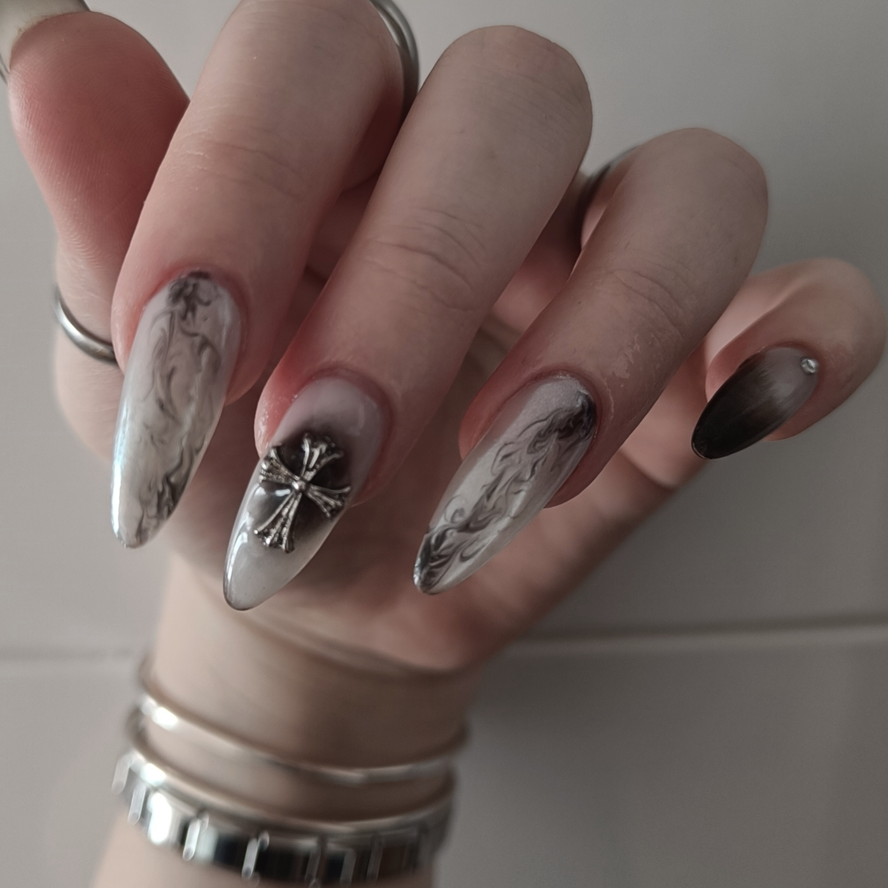
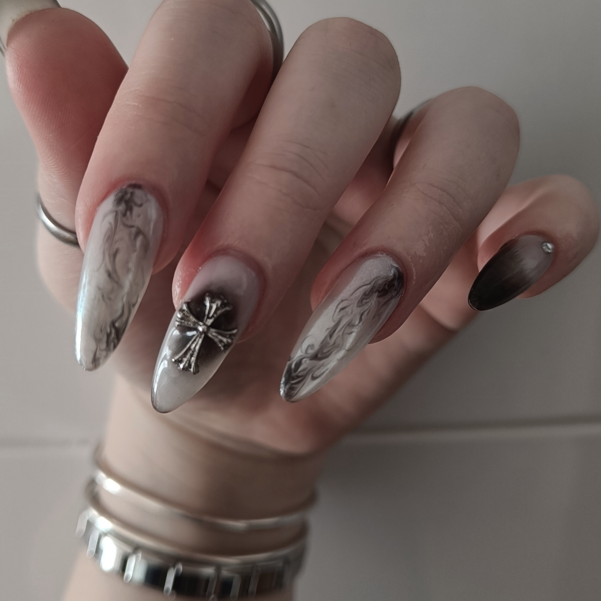
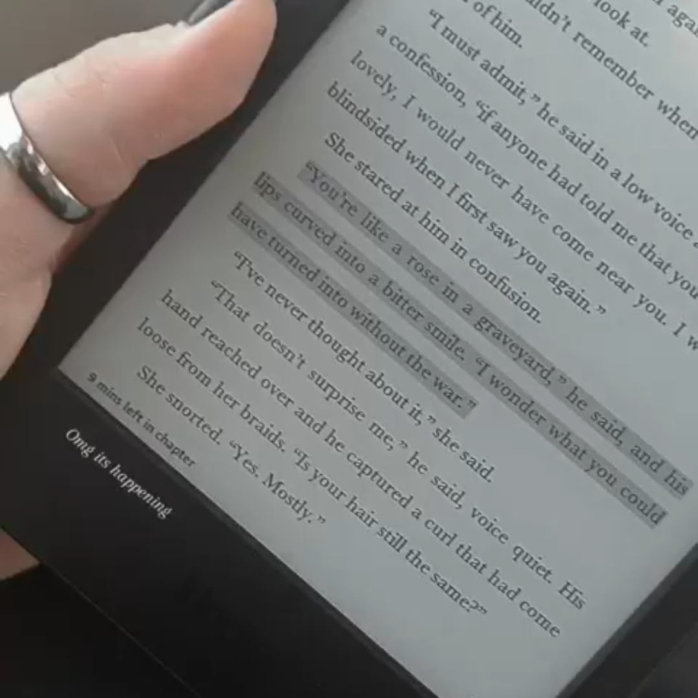
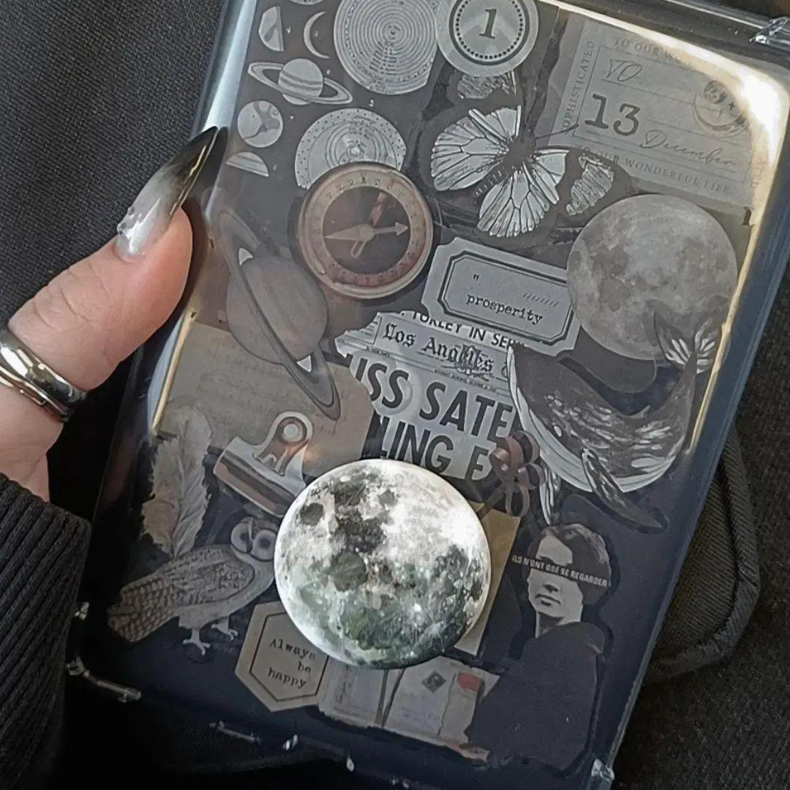
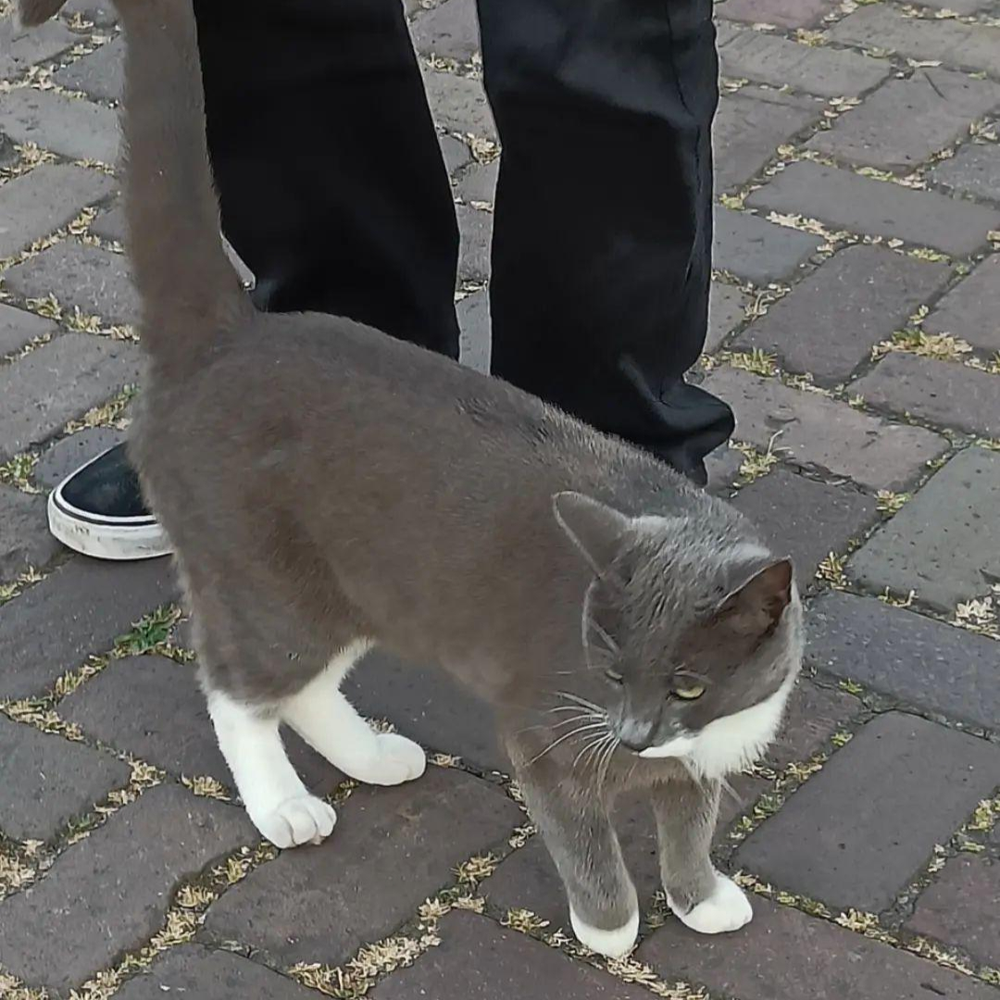
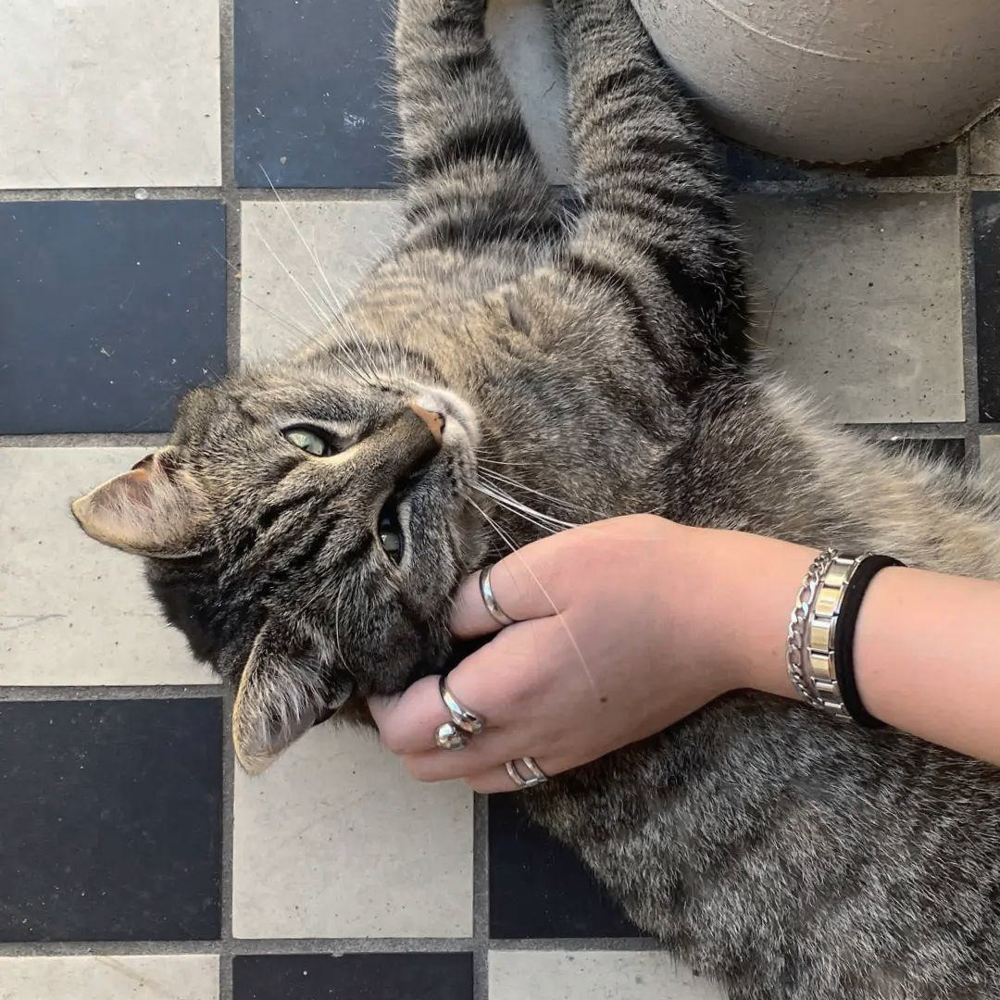

Nails
I've always liked doing my own nails since I was little, perticularly being interested in designs, and was so obsessed witht them that I would practice by glueing a fake nail at the end of a pencil to do the cute drawings I saw on YouTude. This passion grew and since then, you would never catch me with bare nails. Last summer I received a gel polish kit for my birthday which made my addiction even bigger, to the point where I consume so much nail content there should be a study done about it. I also do my friends nails, raging from natural nails to extentions, where of course designs being my forte.
 

Reading
I was never the bookish type, one with a full bookcase in their room filled with fantasy stories as a child, however I imersed myself in this world when I started reading on my phone. Eventually, as a treat to the birthday girl this summer, I bought myself a Kindle and my life hasn't been the same. I consume inforamtion 10 times more rapidly and it is so easy to carry with me. This may seem like an ad but it's just genuine words coming from someone who didn't use to read regularly. My love for my Kindle is so big I even made it pretty and decorated it with stickers
 Petting cats
Back in Romania and Spain, cats that you find on the street aren't the more trusting when it comes to hygene nor safety of not being bitten. However, the Netherlands is basically the land of cats, and I will naver complain about it. i've always wanted to own a cat, but of course those plans will have to e set aside for the future when stability is present in my life, until then though, I can enjoy a nice petting of the cats that I find on the streets
 